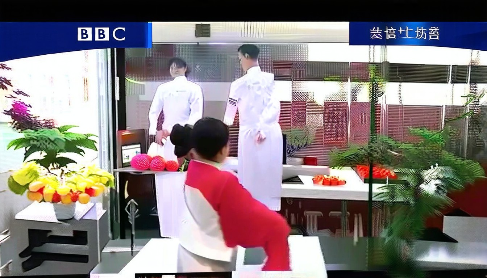
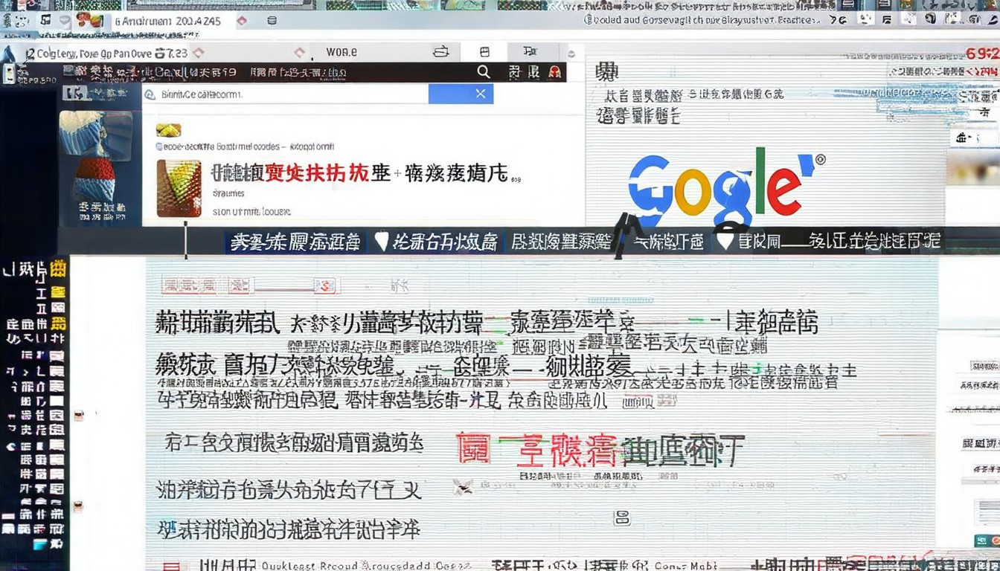
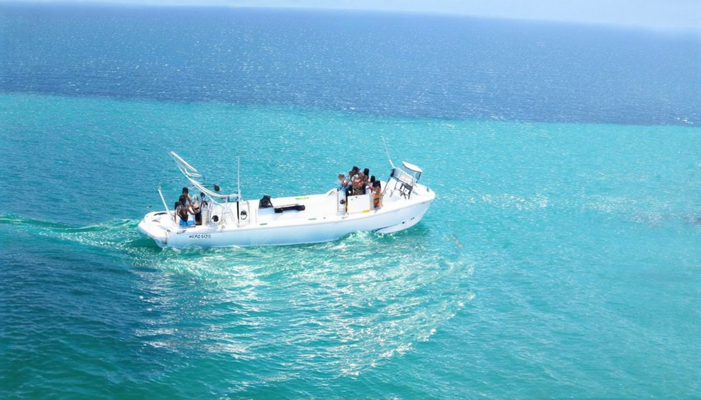
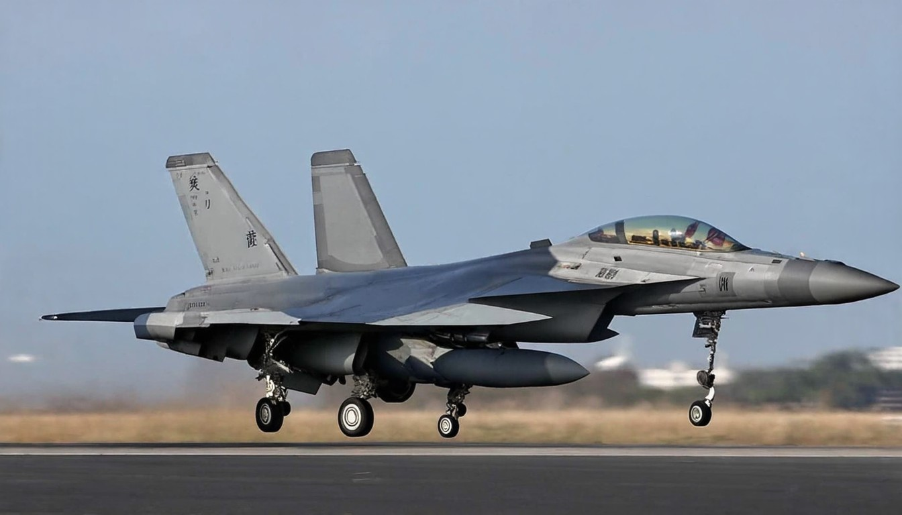
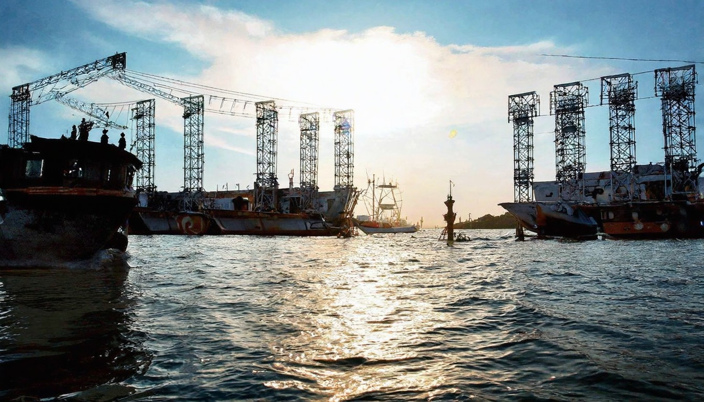

热点信息快报：今日世界发生了什么？2026.4.13
国际油价暴涨，WTI原油期货开盘暴涨超8%报104.9美元/桶，布伦特原油突破102美元/桶；现货黄金下跌逾2%跌破4650美元/盎司；
2026年04月17日 · 全球热点速递
← 返回今日新闻
国际油价暴涨，WTI原油期货开盘暴涨超8%报104.9美元/桶，布伦特原油突破102美元/桶；现货黄金下跌逾2%跌破4650美元/盎司；

*  ## [日本外交藍皮書將中國「降級」，高市早苗又提「修憲」時程：中日關係何去何從?](https://www.bbc.com/zhongwen/ar

# [](https://m.cn.nytimes.com/). * [国际](https://m.cn.nytimes.com/world "国际"). * [中国](https://m.cn.nytimes.com/china "中国"). * [商业与经济](https://m.cn.nytimes.com/business "商业与经济"). * [镜头](https://
[](https://cn.wsj.com/articles/trump-bets-economic-pain-will-finally-force-iran-to-reopen-strait-f431c73f?mod=
Un drone de surveillance MQ-4C Triton de l'US Navy s'est écrasé au-dessus du golfe Persique le 9 avril après avoir soudainement perdu de l'altitude et disparu des systèmes de suivi, rapporte TWZ. Le p

[新闻](https://news.google.com/?hl=zh-CN&gl=CN&ceid=CN%3Azh-Hans). [新闻](https://news.google.com/?hl=zh-CN&gl=CN&ceid=CN%3Azh-Hans). [登录](https://accounts.google.com/ServiceLogin?passive=1209600&continue
## 无障碍链接. 美国 中国 美中关系 社论 热点视频. 中国时间 17:34 2026年4月15日 星期三. # 国际新闻. * 美国国务卿马尔科·卢比奥在美国国务院会晤以色列大使耶希尔·莱特以及黎巴嫩大使娜达·哈马德·穆阿瓦德。(2026年4月14日). 以色列与黎巴嫩星期二(4月14日)同意在美国的斡旋下启动直接和平协商，美国国务院在会谈后宣布这一消息。这是两国在1993年以来首次外交会谈
特朗普10日刚宣布要封锁霍尔木兹海峡，伊朗立马放出两段视频，一段是革命卫队海军拦截美军驱逐舰，一段是无人机监控画面。伊朗军方说得很硬气，这条海峡完全在

# 海事新闻头条汇总（2026年4月14日—15日）. 路透社4月14日报道称，在美国针对伊朗港口相关船舶实施封锁后的首个完整日，至少仍有8艘船通过霍尔木兹海峡；同日，美国军方称已有6艘商船被要求掉头。这说明霍尔木兹并非“完全停航”，但已经进入“具体通行规则、检查、绕航和掉头”并行的执行阶段，风险依旧很高。. 路透社4月14日报道称，英国和法国正组织多边讨论，议题包括航行自由、若海峡继续关闭时的经
首页 宏观 公司 金融 证券 全球 观点 汽车 新健康 人文 创投 智库 更多). 大湾区 一带一路 文旅 理财 投资通 21视频 直播 品牌活动. # 国际新闻早知道丨伊朗提4项“惩罚”回应美威胁 拉共体峰会宣言要求停止封锁古巴. ###### 2026年03月23日 07:19 央视新闻客户端. #### **美以伊战事最新情况**. #### **伊朗总统回应美方威胁：将在战场上坚决对抗
本網站使用相關技術提供更好的閱讀體驗，同時尊重使用者隱私，點這裡瞭解中央社隱私聲明。當您關閉此視窗，代表您同意上述規範。. Your browser does not appear to support Traditional Chinese. Would you like to go to CNA’s English website, “Focus Taiwan”? + 「NO GOOD！歐吉桑
伊朗战争冲击 中国3月出口放缓 经济承压伊朗战争冲击 中国3月出口放缓 经济承压. 中共惠台10政策 专家：实为统战糖衣陷阱中共惠台10政策 专家：实为统战糖衣陷阱. 分析：美登月计划不仅是探索 更是战略博弈分析：美登月计划不仅是探索 更是战略博弈. 分析：排除中共网络威胁 美FCC祭重拳分析：排除中共网络威胁 美FCC祭重拳. 【直播】赫尔辛基委员会简报会：梵蒂冈的外交【直播】赫尔辛基委员会简报

1 乌克兰机场数架F-16和“幻影”战机被摧毁，有外国飞行员身亡 军事频道 · 2 国际原子能机构：扎波罗热核电站短暂失去所有外部电源 国际新闻 · 3 美国部署到中东的军舰物资短缺，

中國為何不會對伊朗施壓？ · 京都男童命案謠言頻傳警：繼父外國籍說法毫無根據 · 怕失去綠卡加州近半年有10萬人退出白卡 · 20中國學者被拒入美中方：別從這機場入境 · 川普：伊朗
由资深国际编辑团队每日自主选题、多语种编译，聚焦真正影响世界的核心新闻。告别碎片化信息，用专业视角帮您高效掌握全球动态，立即阅读。
新华每日电讯 经济参考 瞭望 半月谈 中证报 上证报 中国记者 中国名牌 中国传媒科技 环球 瞭望东方周刊 参考消息 新华出版社. 北京 天津 河北 山西 辽宁 吉林 上海 江苏 浙江 安徽 福建 江西 山东 河南 湖北 湖南 广东 广西 海南 重庆 四川 贵州 云南 西藏 陕西 甘肃 青海 宁夏 新疆 内蒙古
這些新聞文章根據多項因素排名，包括相關性、顯眼度、認受性、內容新鮮度和可用性，以及在允許範圍內，根據你的設定、興趣 (這些興趣可能是由你指明，亦可能是我們根據你過去在 Google 產品上的活動推斷出來)、語言和位置等因素排名。Google 可能與部分此等發佈者有授權協議，但這對結果排名沒有影響。. # 您的摘要. ### 焦點新聞. 作者：丹·史川普夫 和 Tooba Khan.
Thumbnails Document Outline Attachments. Previous. Next. Highlight all. Match case. Whole words. Presentation Mode Open Print Download Current View.